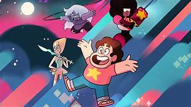

Hola, en este apartado hablaremos sobre el conflicto central de Steven Universe

Personajes Principales
"Steven Universe" es una serie animada creada por Rebecca Sugar que sigue las aventuras de un niño llamado
Steven Universe y las Gemas de Cristal, seres mágicos con poderes extraordinarios. El conflicto central de
la serie gira en torno a la lucha de las Gemas de Cristal contra Homeworld, una sociedad autoritaria que
busca controlar y colonizar otros planetas.
El desarrollo de la trama y de los personajes en "Steven Universe" es muy rico y complejo. A medida que la
serie avanza, Steven descubre más sobre su herencia como mitad gema y mitad humano, así como sobre el pasado
de las Gemas de Cristal y su conexión con Homeworld. Además, la serie aborda temas como la identidad, la
aceptación personal, la amistad y la diversidad.
A lo largo de la serie, los personajes experimentan un crecimiento significativo, enfrentando desafíos
emocionales y físicos que los llevan a madurar y a entender mejor el mundo que los rodea. Este enfoque
en el desarrollo de los personajes y en la exploración de temas profundos ha sido una de las razones por
las que "Steven Universe" ha ganado tanto reconocimiento y admiración por parte de críticos y espectadores.